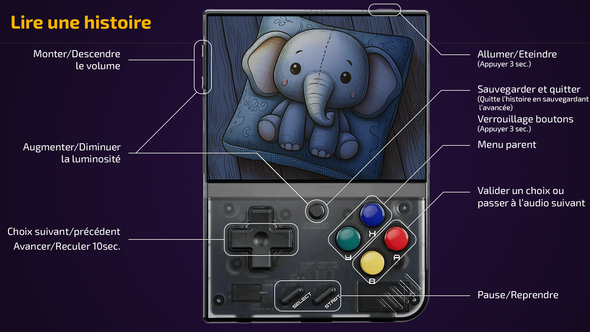
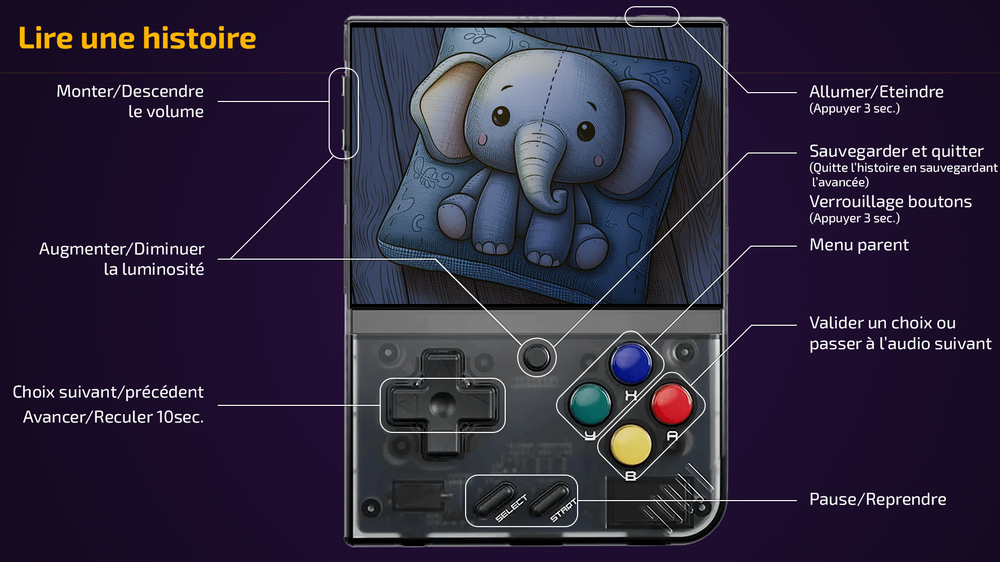

Vous voici dans la documentation de Telmi. Que souhaitez vous découvrir ?
Vous voici dans la documentation de Telmi. Que souhaitez vous découvrir ?
Pour télécharger et installer Telmi Sync, rendez-vous à cette adresse : https://telmi.fr/index.html#download

En construction...
En construction...
En construction...
En construction...
Pour installer Telmi OS il faut commencer par formater une carte micro SD en FAT32.
Attention un formatage supprime toutes les données présentes sur la carte micro SD.
Veuillez télécharger Rufus (https://rufus.ie/fr/) :
Le formatage est terminé, maintenant rendez-vous un peu plus bas pour la suite !
Sur MacOS vous pouvez formatter votre carte micro SD avec l'utilitaire de disque :
Le formatage est terminé, maintenant rendez-vous un peu plus bas pour la suite !
Veuillez vous référer à ce tutoriel pour formater votre carte en FAT32 : https://www.golinuxcloud.com/steps-to-format-sd-card-in-linux/
Le formatage est terminé, maintenant rendez-vous un peu plus bas pour la suite !
Votre carte micro SD est maintenant formater en FAT32 et toujours connectée à votre ordinateur. Nous pouvons passer aux étapes suivantes :
La mise à jour de Telmi OS est automatique.
 



Lorsque vous sélectionnez le dragon accompagné d'une lune et d'étoiles, vous entrez dans le Mode Nuit.
Vous vous retrouvez sur la liste des packs présent dans la Telmi avec un compteur en haut à gauche de l'écran (Un ovale orange avec une lune et 5 étoiles). Ce compteur vous indique le nombre d'histoire dans votre playlist.
Vous devez donc ensuite sélectionner une histoire comme dans le "Mode Histoires" classique sauf que lorsque une histoire (compatible avec le mode nuit) sera lancé, l'écran ne sera pas éteint. A La place il affichera à l'écran deux options :
La playlist se lancera, toutes les histoires sélectionnées se liront à la suite les unes des autres. Une fois la playlist finit, la console s'éteindra.
ATTENTION : Les histoires compatibles avec le mode nuit sont les audio qui respectent les deux règles suivantes :
Cette fonctionnalité est désactivable via Telmi Sync.
 Apprendre à utiliser Telmi Sync
Apprendre à utiliser Telmi Sync
 Apprendre à utiliser Telmi OS
Apprendre à utiliser Telmi OS